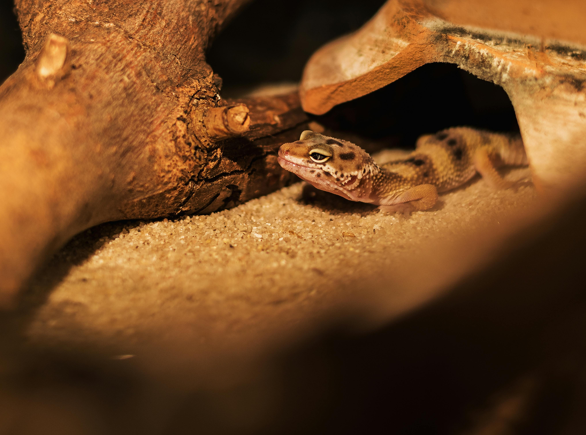

Resources and Citations

Leopard Gecko by Pexels.
Image Citations:
Kamelev, Egor. "Black and Gray Gecko." Pexels, 2018, https://www.pexels.com/photo/black-and-gray-gecko-2202537/.
Pexels. "Gecko on a Tree Branch." Pexels, https://www.pexels.com/photo/gecko-on-a-tree-branch-33264/.
Mast, Japheth. "Close-up Photo of Leopard Gecko on Pebbles." Pexels, https://www.pexels.com/photo/close-up-photo-of-leopard-gecko-on-pebbles-1166441/.